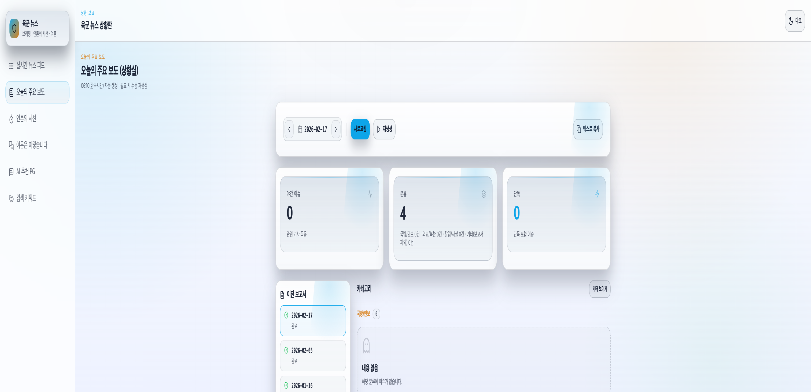
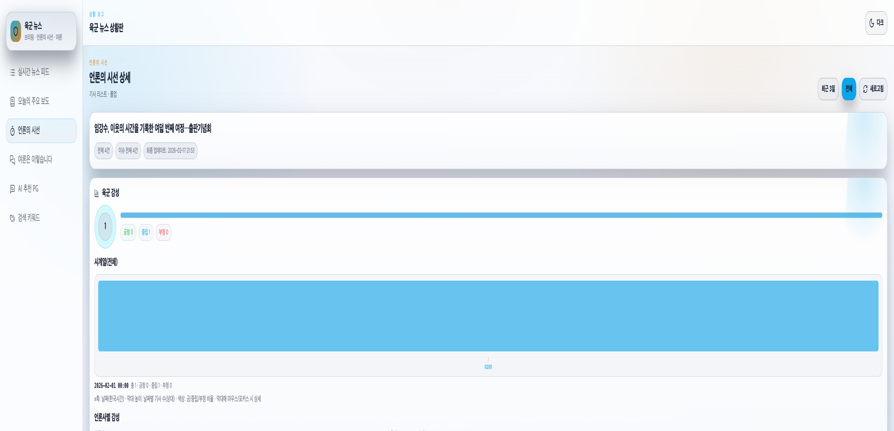
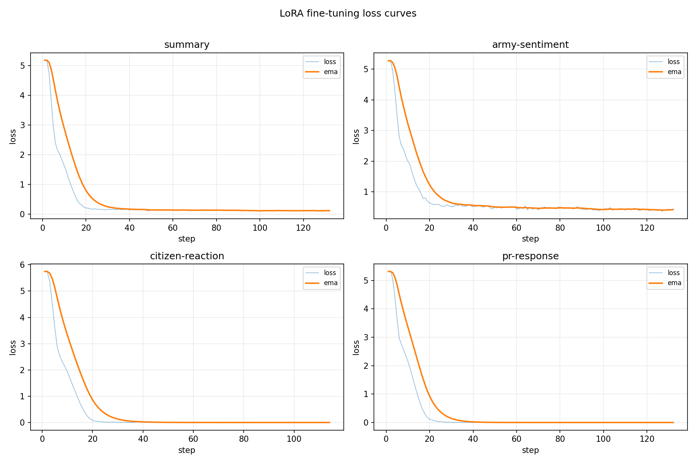
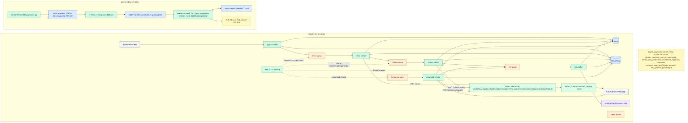

AI Service Pipeline
수집, 크롤링, 클러스터링,LLM 추론을 운영자 UI로 연결했습니다.
Full-Stack AI Developer
뉴스 분석, 교육 첨삭, 서논술형 평가, 머신비전 검사처럼 데이터 수집부터 모델 추론, 운영자 화면까지 이어지는 구현 경험을 정리했습니다.
수집, 크롤링, 클러스터링,LLM 추론을 운영자 UI로 연결했습니다.
문제 생성, 첨삭, rubric 채점,PDF/수식 처리를 다뤘습니다.
LoRA, NLP fine-tuning, OCR,HALCON Deep Learning 경험입니다.
Selected Work
네이버 뉴스 검색 결과를 주기적으로 수집하고, Playwright 크롤러로 본문과 댓글을 추출한 뒤 이슈 클러스터링, 일일 요약, 육군 시점 논조 분석, 시민반응 분석, 대응 문안 생성을 제공하는 운영형 AI 분석 플랫폼입니다.




AI 문제 생성과 첨삭, PDF/수식 처리, quota, 결제, 멀티테넌트, Kubernetes 배포까지 포함한 교육 플랫폼입니다.
서논술형 답안을 OCR, rubric, RAG, AI scoring, feedback 저장 흐름으로 처리하는 평가/첨삭 웹 서비스입니다.
Cognex VisionPro 기반 머신비전 시스템을 HALCON Deep Learning 중심으로 전환한 산업용 검사 시스템입니다.
Technical Range
React, Vite, TypeScript, MUI, data visualization, PDF/print-ready UI
Spring Boot, NestJS, REST API, worker orchestration, quota/cache policy
FastAPI, Python crawler, vLLM, LoRA, RAG, NLP fine-tuning, OCR, HALCON DL
PostgreSQL, MySQL, Redis, BullMQ, Docker, Kubernetes, OCI, GitHub Pages